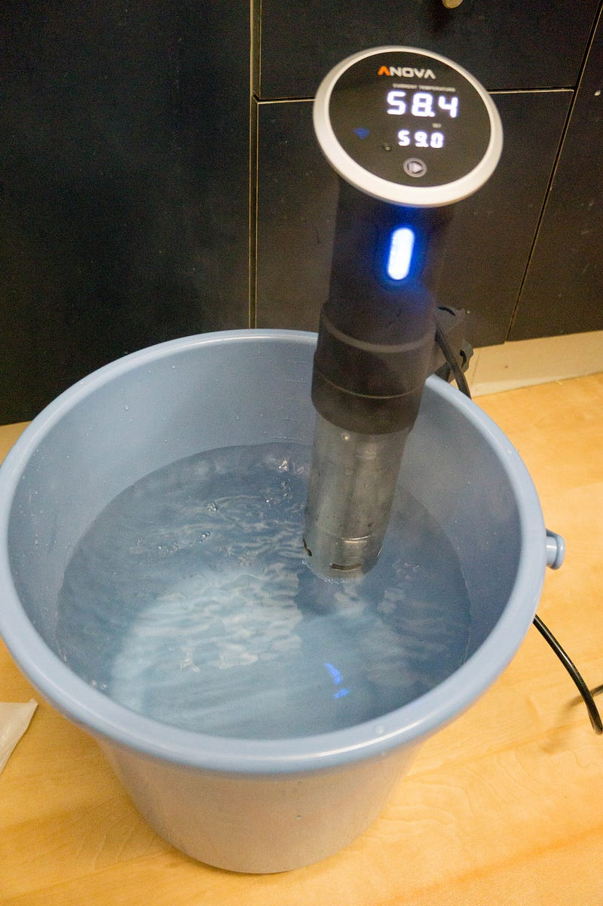

パンドラの箱（Anovaによる低温調理）を開けた
パンドラの箱（Anovaによる低温調理）を開けた
小林銅蟲氏の「めしにしましょう」は好きですが、氏のブログを知るより前から低温調理自体には興味はありました。
Amazonで小林銅蟲の{ProductTitle}。アマゾンならポイント還元本が多数。一度購入いただいた電子書籍は、KindleおよびFire端末、スマートフォンやタブレットなど、様々な端末でもお楽しみいただけます。amzn.to
しかしやはり様々な理由をつけてAnova等の低温調理用のガジェットを買うのは避けてきたのです。
New: Anova Precision Cooker - WIFI 2nd Gen (900 Watts)ほかホーム＆キッチン, 家電, キッチン家電, コンロ・クッキングヒーター, 卓上IHクッキングヒーターが勢ぞろい。ランキング、…amzn.to
馬鹿高くはないですが、正直安いとは言えないので、万が一これを買って1，2回しか使わなくなったら… と思うと、「いいじゃんいいじゃん」と言って買うのも微妙でしたし、やはり衛生管理の面から子供らに食べさせるのはどうか… という気持ちがあって買うのを控えておりました。
ところが上記漫画を妻が読むところとなり、そこからいくつかのAnovaによる低温調理を行ったレポートを掲載しているブログを妻が読み始め、さらにその中でAnovaでコンフィが作れるという記述を見て、気持ちがぐらつきました。
コンフィは元々大好きな料理なのだけど、とにかく(1) 大量の油を使う (2) 温度管理が異常に辛いという欠点があるのです。何回か作ったけど、正直もう自分でやるのは面倒だなーと思っておりました。
ところがAnovaを使って湯煎で調理するようにすれば、温度管理は自動だし、油も少量で済むというじゃないですか。そして衛生面についても普通に作ったコンフィで腹を壊したとかありえないし、やはり80℃の温度で熱してるので、64℃で豚肉を何時間も熱してるのとは違うはず…。
と、悶々としていたのですが、それでもやはり買わなかったのです。でも顔に出ていたのでしょうね。
妻がAnovaを買ってくれました ♡ YATTA!
さて、買ってもらったはいいけど、とりあえず本体以外にもいくつか用意しないといけません。まずジップロック。これはもちろん前から家にあった。
そして低温調理する際にはやっぱり衛生面に気をつけたいので使い捨て手袋を調達。（実際に調達したのは近所のスーパーからなので、商品は厳密には違いますあと↓なぜか画像はアリエール…）
炊事・掃除用ゴム手袋ならアマゾン。いつでもお安く豊富な品ぞろえ。オレンジケアプロダクツ 使い捨て透明手袋 ふつう 100枚などオレンジケアプロダクツの炊事・掃除用ゴム手袋もアマゾン配送商品なら配送料無料（一部除く）amzn.to
そして、うちにある鍋達は残念ながらAnovaをくっつけるにはちょっと高さが足りない…。
そう、Anovaは米国の製品だからか、でかい。こんなサイズの鍋は日本では寸胴鍋じゃないと存在しないのではないか！というサイズ感。
小さい鍋でも一応装着はできるけど、「最低限ここまで水を入れないといけない」という高さがあり、うちの鍋では正直鍋の限界ギリギリまで水をいれないといけなかった。そして水の温度調節をするのに発生する対流が結構力強いので、あまり鍋の限界ギリギリまで水を入れるとこぼれそうになる。
で、寸胴鍋を買うというのも一回考えたんだけど、寸胴鍋はまぁ何千円、という単位の買い物になることが発覚。以下一例（そしてなぜか写真がおたま…どういうことだ）。
業務用アルミ寸胴鍋 24cmが寸胴鍋ストアでいつでもお買い得。お急ぎ便対象商品は当日お届けも可能。アマゾン配送商品は通常配送無料（一部除く）。amzn.to
安いのもあるのかもしれんけど、ちょっとビビったので「万が一使えなかっとしても他の事に転用できて、それほど場所を取らない、そして深い入れ物ってなんだ…？」と考えた結果、バケツを購入。
バケツをお探しなら低価格・豊富な品ぞろえのAmazon.co.jpで、リス『使い易いバケツ』 ベルクバケツ 15SB 本体 ブルーを通販でいつでもお安く。アマゾン配送商品なら通常配送無料（一部除く）。amzn.to
15リットルよりもう少し小さいバケツでもよかったかもしれないけど、使ってみて、わりと有りなサイズだった。
バケツが気に入らないひともいるかもしれんけど、どうせジップロックに入れて水につけるだけだし、別にこれは台所専用にするのでトイレ掃除をしたあとにAnovaをつけるわけじゃないし、全く問題無し、と我々は判断した。

というわけでやっと準備できた。
次回はローストビーフ調理編。